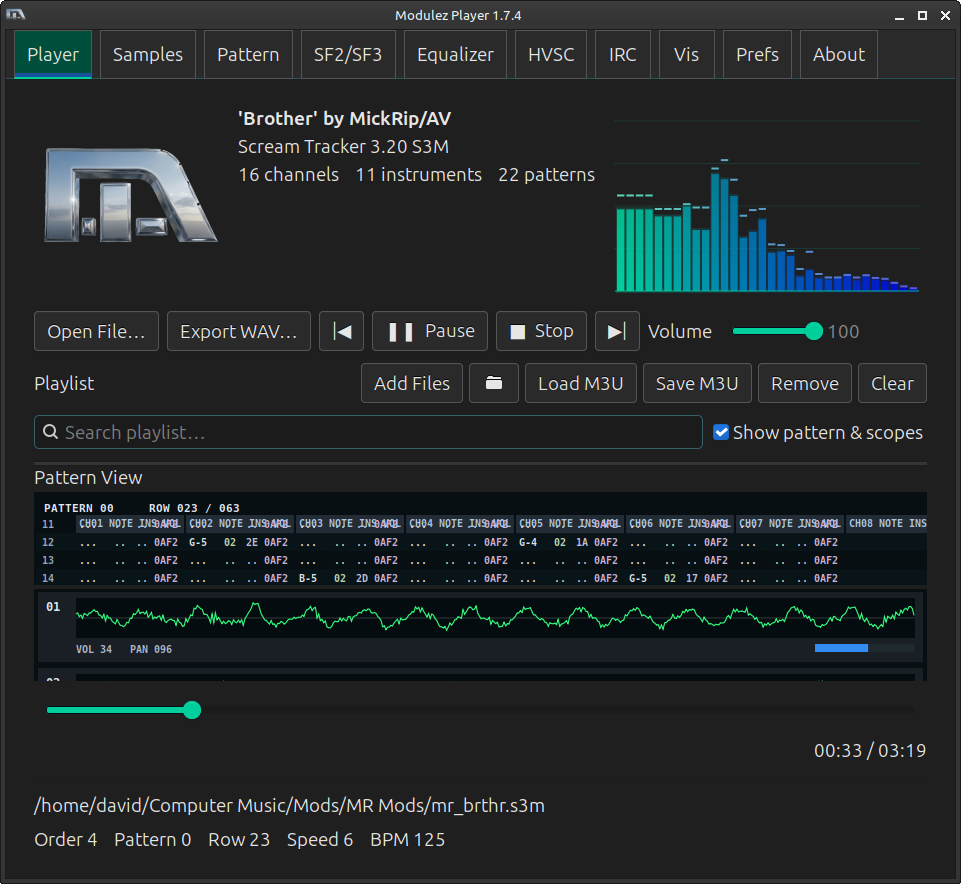

Classic format playback
Enjoy tracker modules, Amiga-era formats, SID and ZX Spectrum tunes, plus MIDI with SoundFont support.
Rediscover tracker modules, chiptunes, MIDI and classic computer music with rich visualizers, customizable colors, and a modern desktop experience.
Free and open source · Distributed as an AppImage

modulez-player-1.7.4.png beside this page to display the actual application screenshot.From vintage tracker tunes to MIDI arrangements, Modulez Player brings an eclectic music library together in one customizable player.
Enjoy tracker modules, Amiga-era formats, SID and ZX Spectrum tunes, plus MIDI with SoundFont support.
Watch waveforms, scopes and immersive visualizations, including fullscreen visualizer mode.
Open folders, search tracks live and choose repeat modes from the playlist context menu.
Adjust the interface colors to match your mood, from subdued charcoal to vibrant accents.
Fine-tune playback with a ten-band equalizer and presets.
Use built-in music collection tools, manage SoundFonts and export audio to WAV.
Get the latest Linux AppImage from GitHub Releases. Want to look under the hood? The source code is available there too.